The Adjust effects alter the properties of the background, offering a powerful way to change the appearance of images.
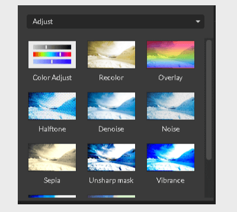
With the Adjust effects, you can recolor images, boost the contrast, apply the texture, or apply an Instagram-like preset.
Color Adjust
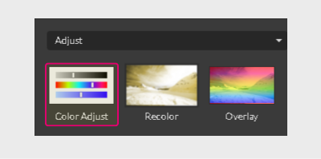
The HSB (hue, saturation, brightness) color system is the go-to if you want to recolor the object in any design editor. The Color Adjust effect employs this system perfectly, combining it with contrast in a single, easy-to-use interface.
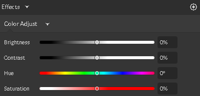
The Color Adjust effect allows you to control four parameters through the sliders:
- Brightness
- Contrast
- Hue
- Saturation
Each slider is centered, so you can go to either side to add up or subtract the value.
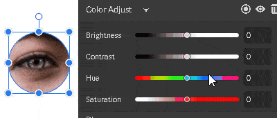
Recolor
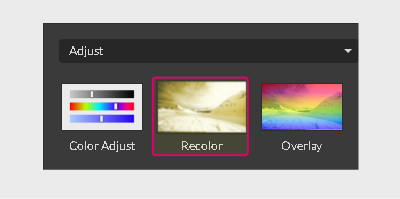
The Recolor effect makes it easy to recolor an image by adjusting the Hue and Saturation sliders.
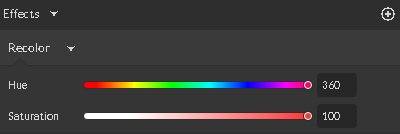
When you choose the Recolor effect, the object or image is altered immediately. You can adjust the sliders to achieve the effect you desire.
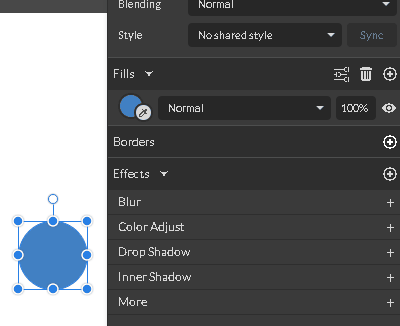
Overlay
The Overlay effect adds another fill on top of the object.

By default, it is a black-to-white linear gradient. The white gradient stop has a 0% of opacity value.
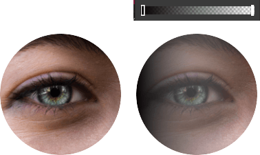
You can change the overlay’s fill value by clicking on the Eyedropper tool, which will activate the pop-up Color Picker.
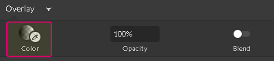
You can type a percentage in the text field above Opacity to set the transparency of the overlay.
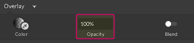
In addition, you can toggle the Blend slider to combine the object with the overlay, which merges the background of the object and the transparency of the overlay effect.
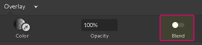
This is how you can make a transparency mask for the object. For more information about transparency masks, please see this article.
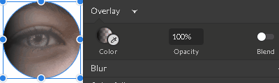
Halftone
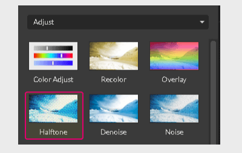
Halftone is a technique that uses dots to simulate a gradient or tone. Gravit Designer is equipped with the powerful Halftone effect, which lets you fine-tune it by using several options:
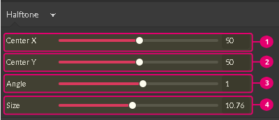
- Center X (1) slider – moves dots horizontally
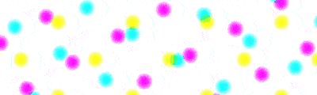 - Center Y (2) slider – moves dots vertically
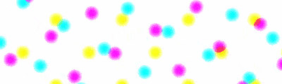 - Angle (3) slider – rotates dots up to the 90º, or 1.57rad (π/2)
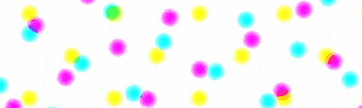 - Size (4) slider – scales the dots up and down
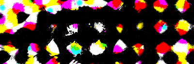
Denoise
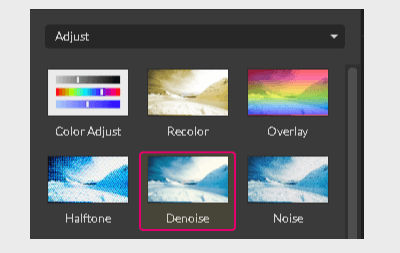
The Denoise effect reduces the amount of noise from the object, which can make grainy objects appear more smooth.
You can drag the Exponent slider to control the intensity of the effect. A high value of the exponent leaves more details, while a low exponent value makes the image more smooth and blurry.
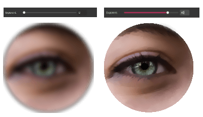
Noise
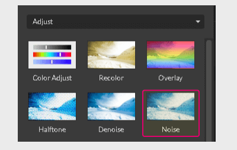
The Noise effect makes an image noisy, which is perfect for grain textures.
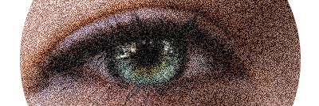
You can control the intensity of the effect by dragging the Amount slider. The higher the amount the more grainy the result.
Sepia
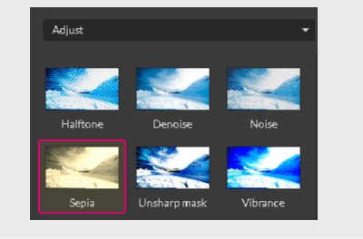
The Sepia effect simulates the look created when you take a photo with sepia film. Sepia-toned images are similar to black-and-white photos (also known as grayscale photos), except the tones are brown instead of gray.
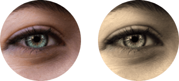
The Sepia effect makes an image monochromatic and warm. You can control the intensity of the effect by dragging the Amount slider.
Unsharp mask
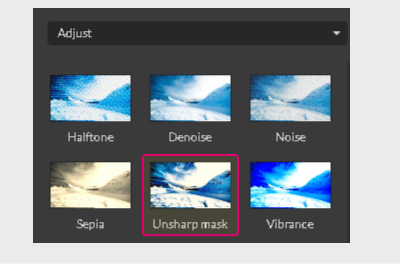
The Unsharp mask effect lets you make images appear sharper.
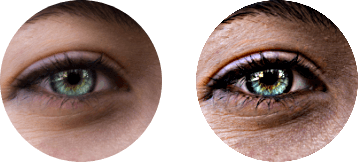
It uses a blurred (unsharp) duplicate of the object to create a mask for the original one. Mathematical equations applied to their blend makes the original image sharper.
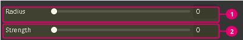
Use the Strength (1) slider to control the intensity of the effect.
The Radius (2) slider helps you to specify the number of details. A small radius preserves fine details of the image.
A higher radius creates halos at the edges by reducing the number of details.
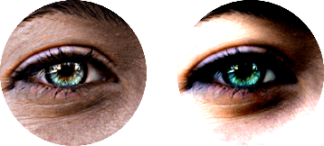
Vibrance
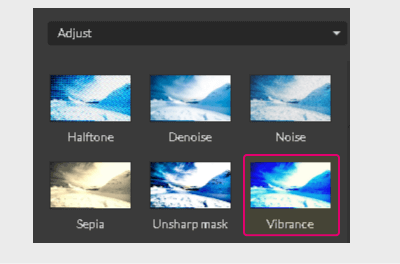
The Vibrance effect finds pixels with low saturation and boosts them.
Vibrance is a “smart saturation” effect because:
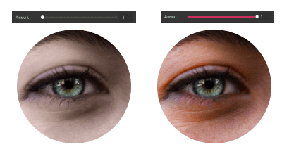
- it increases the saturation of only low-saturated pixels
- it preserves the skin tones from becoming overly saturated and unnatural
You can control the intensity of the effect by adjusting the Amount slider.
Bloom

The Bloom effect enhances the edges of the light source, so they start bleeding beyond the natural borders. Basically, it makes images glow.
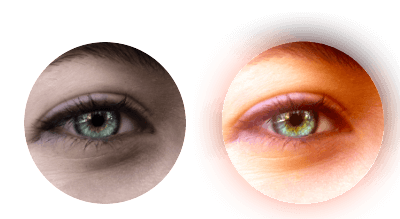
It focuses on edges, making them excessively bright. It was designed to emulate the real-world light that overwhelms a camera or a human eye.
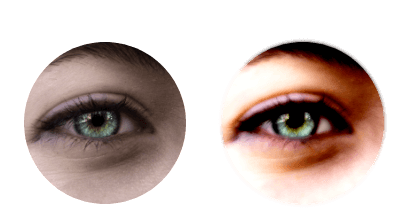
The Bloom effect provides 6 sliders that help you to fine-tune each and every aspect of the effect:
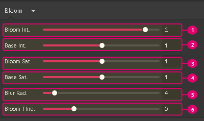
- Bloom int. – controls the brightness of the effect
- Base int. – controls the brightness of the original object
- Bloom sat. – controls the saturation of the bloom effect
- Base sat. – controls the saturation of the original object
- Blur radius – controls the intensity of the blur
- Bloom thre. – defines a minimal value of pixel luminosity to be enhanced
Color Grading
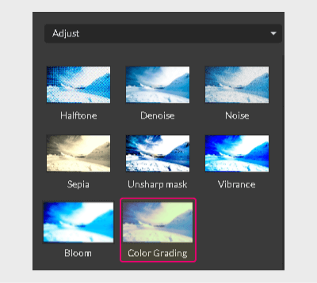
The Color grading effect allows you to apply coloring presets by using a simple interface. You can choose a predefined preset from the drop-down (1) or upload a custom preset (2) in the .acv file format.
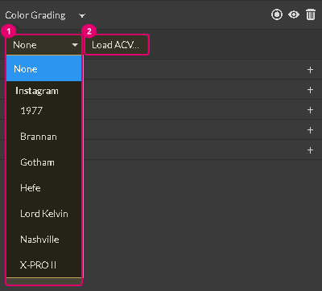